___________________________
Take Me to Thailand is a restaurant website that my teammates and I (one of which is my sister Sahara Fathelbab )
worked on as our final project for our Software Engineering course. The functionalities and features of Take Me to Thailand each catered to the needs of the
cutomers, managers, employees, and the owner. The customer has the ability to order items of their choice with valid login information (the password was also hashed and encrypted for security purposes).
Once the customer has logged in successfully, they may proceed and choose to Dine In or Pick Up upon placing their order. Managers have the ability to manage and edit inventory, as well as view information of other
managers and employees. Employees have the ability to view the menu page, as well as other employees and their respective information. Lastly. the owner has the ability to forsee everything, manage and edit inventory, etc.
VIDEO - to view a user using this website live, you can click here ! To continue with the walkthrough of this website, you may continue scrolling!
___________________________
Software used to create Take Me to Thailand:
Atom
Code used to create Take Me to Thailand:
Javascript, HTML&CSS, PHP, MySQL Database
What categories can customers order from Take Me to Thailand?
There are five categories to choose from - Soup, Appetizers, Lunch, Dinner, Beverages.
Login Page
- 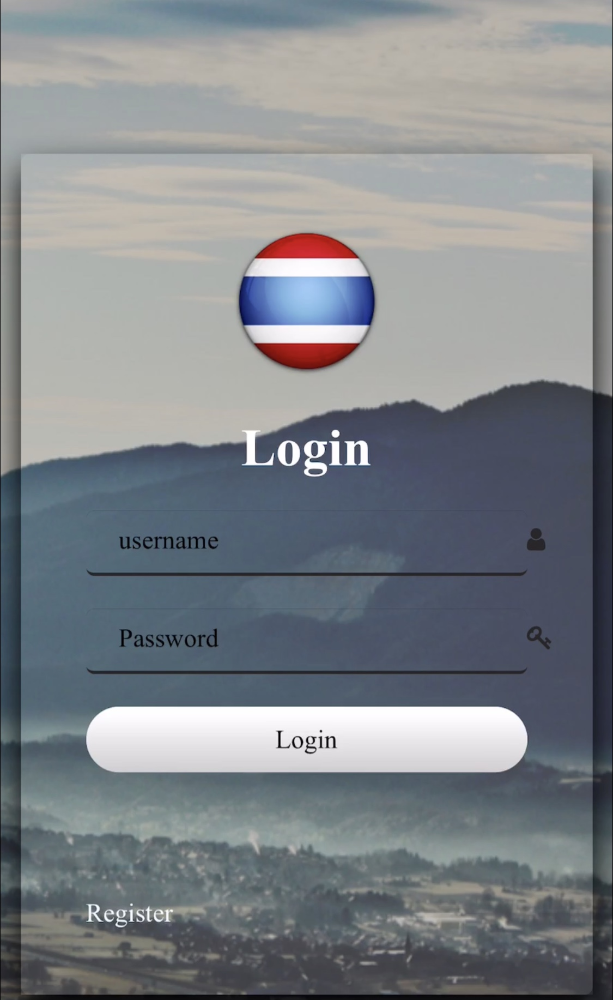
Figure 1
- 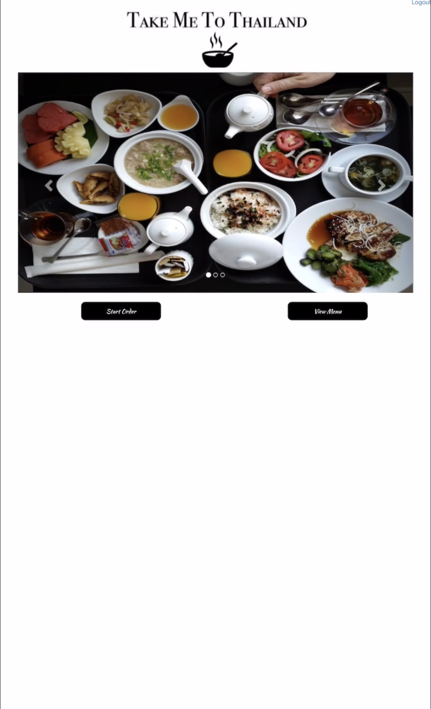
Figure 1.2
FOUR PAGE VIEWS
[There are four different pages a person can be brought to when logging in to Take Me to Thailand; these pages include the Owner, Manager, Employee, and Customer. Based on the login information inputed, the user will be brought to their respective page.]
Owner - Once the owner has logged in with their respecitve username and password, they have the ability to view, edit, add, and remove items from the menu. They can also view the employees page (this includes information regarding each employee, i.e. - work schedule, sick days taken, etc.), and the managers page.
Manager - Once the manager has logged in with their respecitve username and password, they can view employees pages (i.e. - sick days, work schedule, etc.) but cannot remove, add, or edit anything from the employee page. They are also able to edit, add, remove items from the menu.
Employee - Once the employee has logged in with their respecitve username and password, they can view other employees and managers, but do not have the ability to edit, add, or remove anything.
Customer - Once the customer has logged in with their respecitve username and password, they can view items on menu, order items, and is entitled to a rewards system for each item they purchase.
[This walkthrough will be dedicated to the customer's page]
Figure 1 - When the customer reaches Take Me to Thailand's website, they are met with the login page where they are input their respective username and password (the password has been hashed and encrypted for security purposes).
If they don't have an account, they can simply select "Register" on the bottom left hand corner to create their account.
If however they are a returning customer, their information will be saved.
Once they have logged in successfully, they are be brought to a page which prompts the user to "Start Order" or "View Menu" displayed on Figure 1.2.
Figure 1.2 - Once the user is logged in, they have to option to "Start Order" or "View Menu" which is a read only pdf version of the restaurant's menu.
View Menu
- 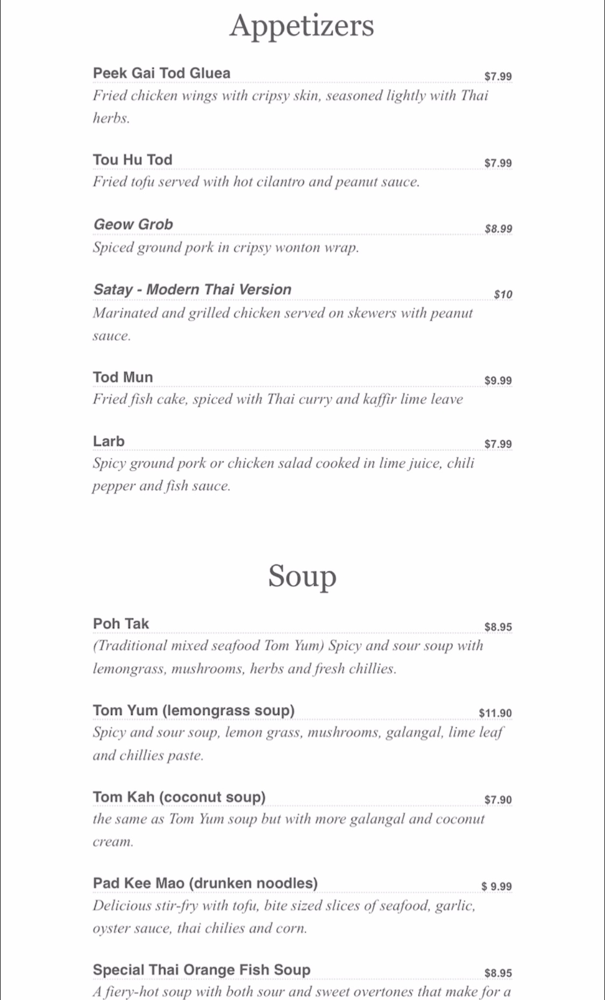
Figure 2
- 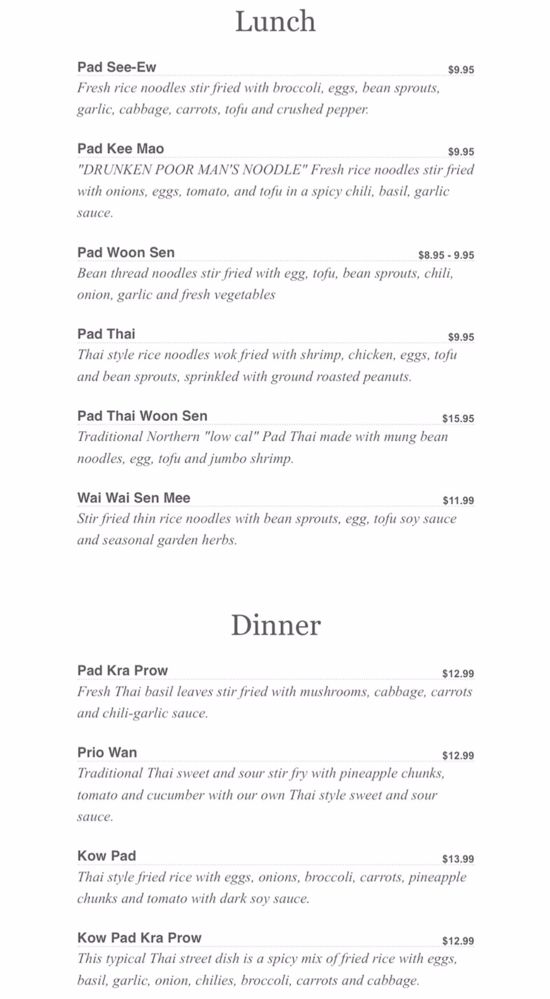
Figure 2.1
- 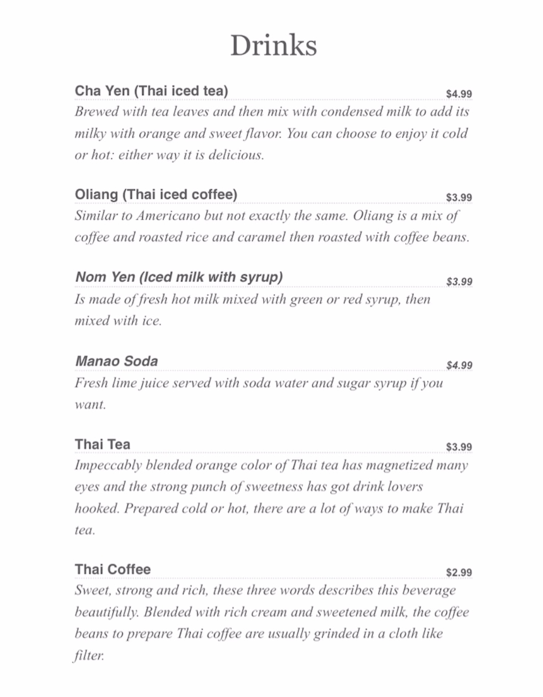
Figure 2.2
Figure 2 - 2.2 - When the customer selects "View Menu", they are able to view the pdf version of the read-only menu. Each of the five categories consist of 6 items to choose from per category. By viewing the read-only menu, this allows for the customer to have a good glance at each item in full detail before they decide they want proceed with creating their order.
Start Order
- 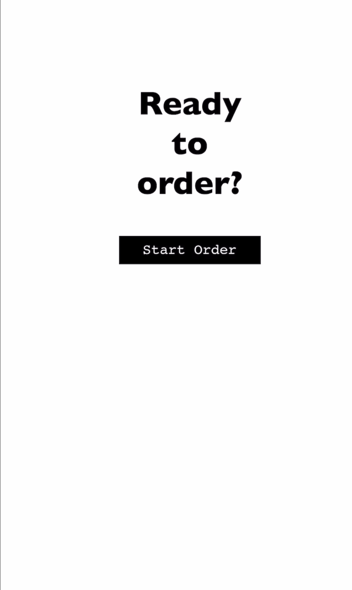
Figure 3
- 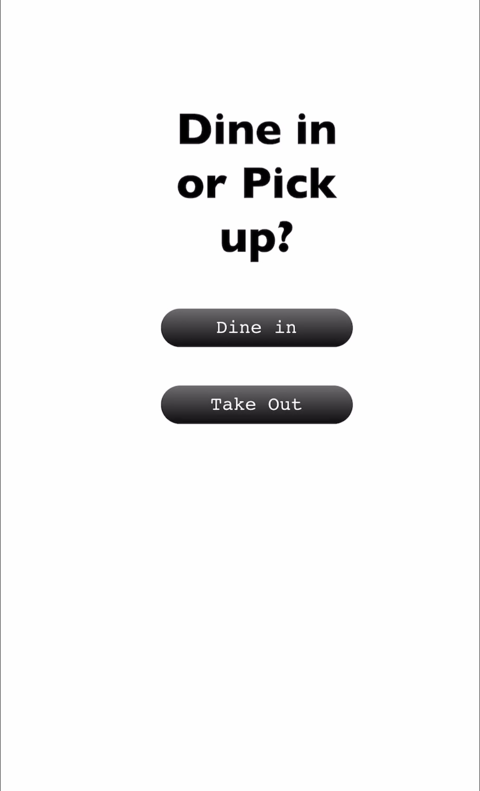
Figure 3.1
- 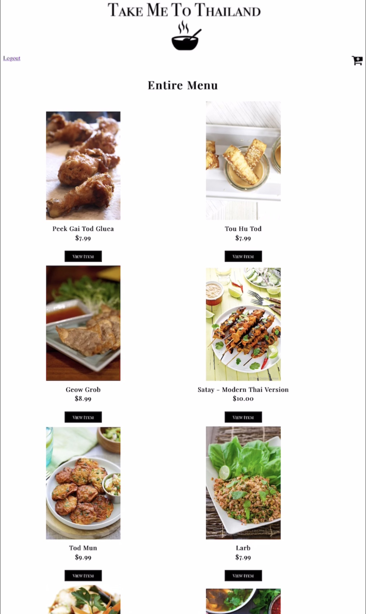
Figure 3.2
Figure 3 - When the customer selects "Start Order", they simply confirm that they are ready to start their order.
Figure 3.1 - Once the user has clicked on "Start Order", they have the option to select "Dine In" if they would like to dine in the restaurant, or they can select the "Take Out" option if they need to have their order on the go.
Figure 3.2 - Once the user has selected to either "Dine In" or "Take Out", they they are met with the entire menu and may begin adding any item they desire into their cart to start their order.
Order Complete
- 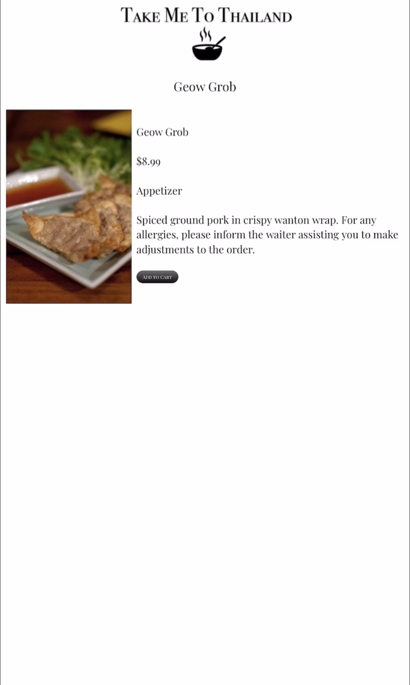
Figure 4
- 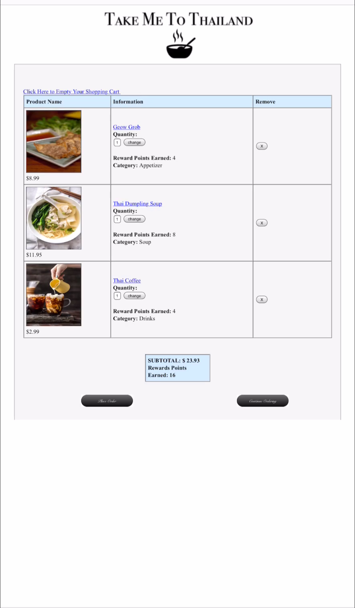
Figure 4.1
- 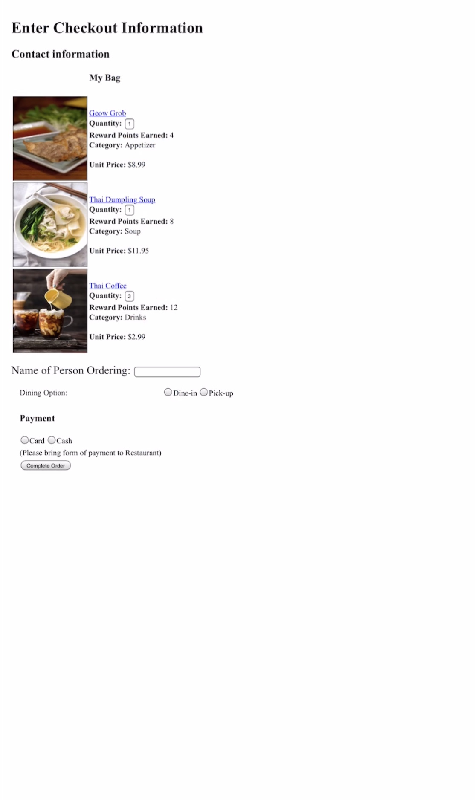
Figure 4.2
- 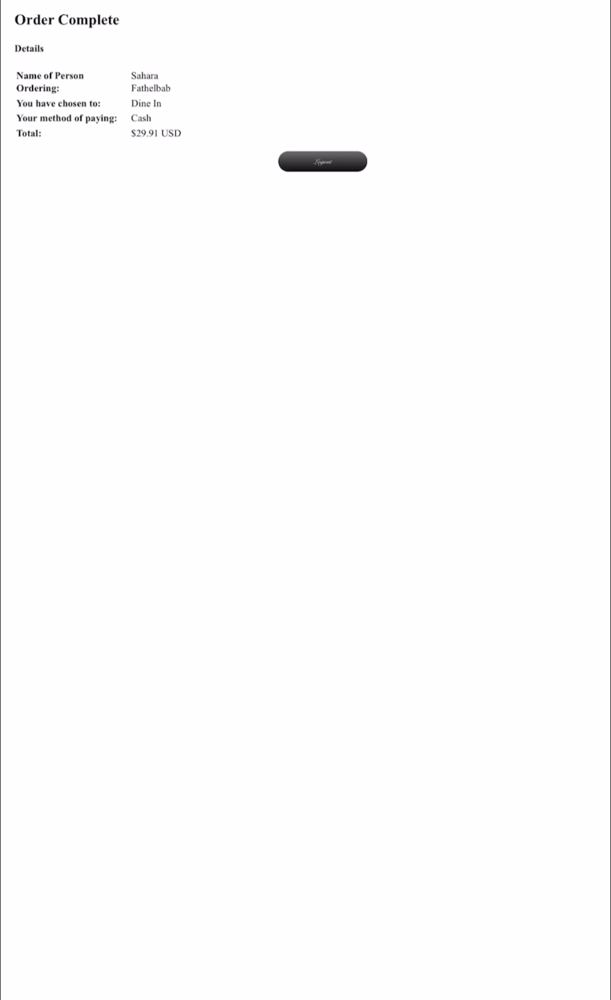
Figure 4.3
Figure 4 - If the customer is interested in knowing more details about an item of choice, they can simply select the item and they will be met with the name, price, category, and details of the item before they decide they want to add the item to their cart.
Figure 4.1 - In this figure, the customer is ready to place their order and view the items in their cart. Once they are at the cart page, they will have a summary of their order with the ability to edit the quantity of each item as well as remove it. Upon confirming to place their order, they are shown the total cost, and reward points added to their account.
Figure 4.2 - Once the user has placed their order, their order information will be echoed. They will then add their name and payment type (for university policy, we were not allowed to have the user input and credit information so as not to be saved to any database). After they have filled out the required information, they can select "Confirm Order" to officially place their order.
Figure 4.3 - Once the customer has placed their order, they are given an electronic receipt with a summary of their order!
*Given that this website operates with PHP and MySQL database, I have not been able to find a way to provide the live link (rest assured, the live link does exist - just not on here!).